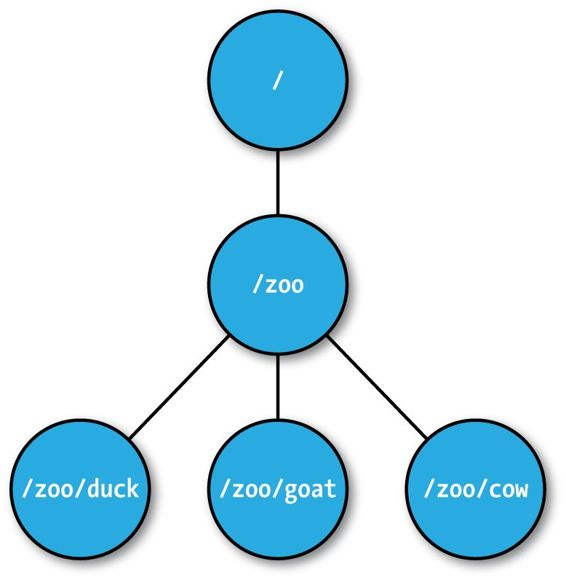
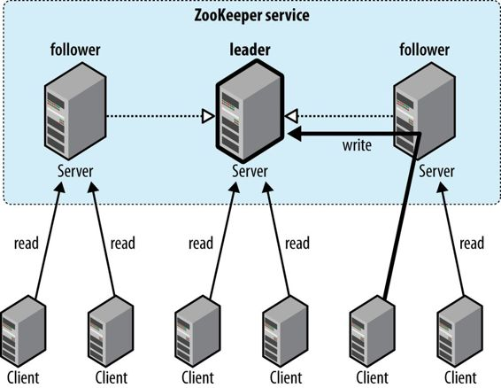
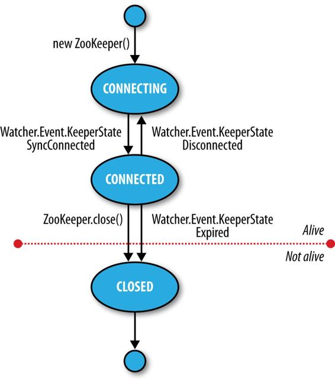

<!doctype html>


  


<html class="theme-next muse use-motion" lang="">
<head>
  <meta charset="UTF-8"/>
<meta http-equiv="X-UA-Compatible" content="IE=edge" />
<meta name="viewport" content="width=device-width, initial-scale=1, maximum-scale=1"/>


<meta http-equiv="Cache-Control" content="no-transform" />
<meta http-equiv="Cache-Control" content="no-siteapp" />


  
  
  <link href="/lib/fancybox/source/jquery.fancybox.css?v=2.1.5" rel="stylesheet" type="text/css" />


  
  
  
  

  
    
    
  

  

  

  

  

  
    
    
    <link href="//fonts.googleapis.com/css?family=Lato:300,300italic,400,400italic,700,700italic&subset=latin,latin-ext" rel="stylesheet" type="text/css">
  


<link href="/lib/font-awesome/css/font-awesome.min.css?v=4.6.2" rel="stylesheet" type="text/css" />

<link href="/css/main.css?v=5.1.0" rel="stylesheet" type="text/css" />


  <meta name="keywords" content="ZooKeeper," />


  <link rel="shortcut icon" type="image/x-icon" href="/favicon.ico?v=5.1.0" />


<meta name="description" content="概述Zookeeper是分布式调度服务。在分布式系统当中，当集群中的部分节点出现故障，那么需要通知其他节点。Zookeeper主要就是用来解决这个问题
实例以上将编写Zookeeper客户端程序，来展示其是如何管理集群中的节点
组和成员Zookeeper可以看成是一个高可用的文件系统，但它没有文件和文件夹的概念，其是一个树状结构。它的基本单元是znode，其主要用来存储数据。

创建组123456">
<meta property="og:type" content="article">
<meta property="og:title" content="深入浅出ZooKeeper">
<meta property="og:url" content="http://xu6148152.github.io/2018/04/01/深入浅出ZooKeeper/index.html">
<meta property="og:site_name" content="Blog">
<meta property="og:description" content="概述Zookeeper是分布式调度服务。在分布式系统当中，当集群中的部分节点出现故障，那么需要通知其他节点。Zookeeper主要就是用来解决这个问题
实例以上将编写Zookeeper客户端程序，来展示其是如何管理集群中的节点
组和成员Zookeeper可以看成是一个高可用的文件系统，但它没有文件和文件夹的概念，其是一个树状结构。它的基本单元是znode，其主要用来存储数据。

创建组123456">
<meta property="og:image" content="http://xu6148152.github.io/./znode.jpeg">
<meta property="og:image" content="http://xu6148152.github.io/./consistency.jpeg">
<meta property="og:image" content="http://xu6148152.github.io/./state.jpeg">
<meta property="og:updated_time" content="2018-04-01T08:29:43.984Z">
<meta name="twitter:card" content="summary">
<meta name="twitter:title" content="深入浅出ZooKeeper">
<meta name="twitter:description" content="概述Zookeeper是分布式调度服务。在分布式系统当中，当集群中的部分节点出现故障，那么需要通知其他节点。Zookeeper主要就是用来解决这个问题
实例以上将编写Zookeeper客户端程序，来展示其是如何管理集群中的节点
组和成员Zookeeper可以看成是一个高可用的文件系统，但它没有文件和文件夹的概念，其是一个树状结构。它的基本单元是znode，其主要用来存储数据。

创建组123456">
<meta name="twitter:image" content="http://xu6148152.github.io/./znode.jpeg">


<script type="text/javascript" id="hexo.configurations">
  var NexT = window.NexT || {};
  var CONFIG = {
    root: '/',
    scheme: 'Muse',
    sidebar: {"position":"left","display":"post"},
    fancybox: true,
    motion: true,
    duoshuo: {
      userId: '0',
      author: 'Author'
    },
    algolia: {
      applicationID: '',
      apiKey: '',
      indexName: '',
      hits: {"per_page":10},
      labels: {"input_placeholder":"Search for Posts","hits_empty":"We didn't find any results for the search: ${query}","hits_stats":"${hits} results found in ${time} ms"}
    }
  };
</script>


  <link rel="canonical" href="http://xu6148152.github.io/2018/04/01/深入浅出ZooKeeper/"/>


  <title> 深入浅出ZooKeeper | Blog </title>
</head>

<body itemscope itemtype="http://schema.org/WebPage" lang="">

  


  
  
    
  

  <div class="container one-collumn sidebar-position-left page-post-detail ">
    <div class="headband"></div>

    <header id="header" class="header" itemscope itemtype="http://schema.org/WPHeader">
      <div class="header-inner"><div class="site-meta ">
  

  <div class="custom-logo-site-title">
    <a href="/"  class="brand" rel="start">
      <span class="logo-line-before"><i></i></span>
      <span class="site-title">Blog</span>
      <span class="logo-line-after"><i></i></span>
    </a>
  </div>
    
      <p class="site-subtitle"></p>
    
</div>

<div class="site-nav-toggle">
  <button>
    <span class="btn-bar"></span>
    <span class="btn-bar"></span>
    <span class="btn-bar"></span>
  </button>
</div>

<nav class="site-nav">
  

  
    <ul id="menu" class="menu">
      
        
        <li class="menu-item menu-item-home">
          <a href="/" rel="section">
            
              <i class="menu-item-icon fa fa-fw fa-home"></i> <br />
            
            Startseite
          </a>
        </li>
      
        
        <li class="menu-item menu-item-archives">
          <a href="/archives" rel="section">
            
              <i class="menu-item-icon fa fa-fw fa-archive"></i> <br />
            
            Archiv
          </a>
        </li>
      
        
        <li class="menu-item menu-item-tags">
          <a href="/tags" rel="section">
            
              <i class="menu-item-icon fa fa-fw fa-tags"></i> <br />
            
            Tags
          </a>
        </li>
      

      
    </ul>
  

  
</nav>


 </div>
    </header>

    <main id="main" class="main">
      <div class="main-inner">
        <div class="content-wrap">
          <div id="content" class="content">
            

  <div id="posts" class="posts-expand">
    

  

  
  
  

  <article class="post post-type-normal " itemscope itemtype="http://schema.org/Article">
  <link itemprop="mainEntityOfPage" href="http://xu6148152.github.io/2018/04/01/深入浅出ZooKeeper/">

  <span style="display:none" itemprop="author" itemscope itemtype="http://schema.org/Person">
    <meta itemprop="name" content="Binea">
    <meta itemprop="description" content="">
    <meta itemprop="image" content="/upload_file/tmp.jpg">
  </span>

  <span style="display:none" itemprop="publisher" itemscope itemtype="http://schema.org/Organization">
    <meta itemprop="name" content="Blog">
    <span style="display:none" itemprop="logo" itemscope itemtype="http://schema.org/ImageObject">
      
    </span>
  </span>

    
      <header class="post-header">

        
        
          <h1 class="post-title" itemprop="name headline">
            
            
              
                深入浅出ZooKeeper
              
            
          </h1>
        

        <div class="post-meta">
          <span class="post-time">
            
              <span class="post-meta-item-icon">
                <i class="fa fa-calendar-o"></i>
              </span>
              
                <span class="post-meta-item-text">Veröffentlicht am</span>
              
              <time title="Post created" itemprop="dateCreated datePublished" datetime="2018-04-01T16:29:43+08:00">
                2018-04-01
              </time>
            

            

            
          </span>

          

          
            
          

          

          
          

          

          

        </div>
      </header>
    


    <div class="post-body" itemprop="articleBody">

      
      

      
        <h3 id="概述"><a href="#概述" class="headerlink" title="概述"></a>概述</h3><p><code>Zookeeper</code>是分布式调度服务。在分布式系统当中，当集群中的部分节点出现故障，那么需要通知其他节点。<code>Zookeeper</code>主要就是用来解决这个问题</p>
<h3 id="实例"><a href="#实例" class="headerlink" title="实例"></a>实例</h3><p>以上将编写<code>Zookeeper</code>客户端程序，来展示其是如何管理集群中的节点</p>
<h4 id="组和成员"><a href="#组和成员" class="headerlink" title="组和成员"></a>组和成员</h4><p><code>Zookeeper</code>可以看成是一个高可用的文件系统，但它没有文件和文件夹的概念，其是一个树状结构。它的基本单元是<code>znode</code>，其主要用来存储数据。</p>
<p></p>
<h4 id="创建组"><a href="#创建组" class="headerlink" title="创建组"></a>创建组</h4><p><figure class="highlight kotlin"><table><tr><td class="gutter"><pre><div class="line">1</div><div class="line">2</div><div class="line">3</div><div class="line">4</div><div class="line">5</div><div class="line">6</div><div class="line">7</div><div class="line">8</div><div class="line">9</div><div class="line">10</div><div class="line">11</div><div class="line">12</div><div class="line">13</div><div class="line">14</div><div class="line">15</div><div class="line">16</div><div class="line">17</div><div class="line">18</div><div class="line">19</div><div class="line">20</div><div class="line">21</div><div class="line">22</div><div class="line">23</div><div class="line">24</div><div class="line">25</div><div class="line">26</div><div class="line">27</div><div class="line">28</div><div class="line">29</div><div class="line">30</div><div class="line">31</div><div class="line">32</div><div class="line">33</div><div class="line">34</div><div class="line">35</div><div class="line">36</div></pre></td><td class="code"><pre><div class="line"></div><div class="line"><span class="keyword">open</span> <span class="class"><span class="keyword">class</span> <span class="title">ConnectionWatcher</span> : <span class="type">Watcher &#123;</span></span></div><div class="line"></div><div class="line">    <span class="keyword">var</span> zk: ZooKeeper? = <span class="literal">null</span></div><div class="line">    <span class="keyword">var</span> connectedSignal: CountDownLatch = CountDownLatch(<span class="number">1</span>)</div><div class="line"></div><div class="line">    <span class="meta">@Throws(IOException::class, InterruptedException::class)</span></div><div class="line">    <span class="function"><span class="keyword">fun</span> <span class="title">connect</span><span class="params">(hosts: <span class="type">String</span>?)</span></span> &#123;</div><div class="line">        zk = ZooKeeper(hosts, CreateGroup.SESSION_TIMEOUT, <span class="keyword">this</span>)</div><div class="line">        connectedSignal.await()</div><div class="line">    &#125;</div><div class="line"></div><div class="line">    <span class="keyword">override</span> <span class="function"><span class="keyword">fun</span> <span class="title">process</span><span class="params">(event: <span class="type">WatchedEvent</span>?)</span></span> &#123;</div><div class="line">        <span class="keyword">if</span> (event!!.state == Watcher.Event.KeeperState.SyncConnected) &#123;</div><div class="line">            connectedSignal.countDown()</div><div class="line">        &#125;</div><div class="line">    &#125;</div><div class="line"></div><div class="line">    <span class="meta">@Throws(InterruptedException::class)</span></div><div class="line">    <span class="function"><span class="keyword">fun</span> <span class="title">close</span><span class="params">()</span></span> &#123;</div><div class="line">        zk!!.close()</div><div class="line">    &#125;</div><div class="line">&#125;</div><div class="line"></div><div class="line"><span class="class"><span class="keyword">class</span> <span class="title">CreateGroup</span> : <span class="type">ConnectionWatcher</span></span>() &#123;</div><div class="line">    <span class="keyword">companion</span> <span class="keyword">object</span> &#123;</div><div class="line">        <span class="keyword">val</span> SESSION_TIMEOUT: <span class="built_in">Int</span> = <span class="number">5000</span></div><div class="line">    &#125;</div><div class="line"></div><div class="line">    <span class="meta">@Throws(KeeperException::class, InterruptedException::class)</span></div><div class="line">    <span class="function"><span class="keyword">fun</span> <span class="title">create</span><span class="params">(groupName: <span class="type">String</span>?)</span></span> &#123;</div><div class="line">        <span class="keyword">val</span> path = <span class="string">"/"</span> + groupName</div><div class="line">        <span class="keyword">val</span> createPath = zk!!.create(path, <span class="literal">null</span>, ZooDefs.Ids.OPEN_ACL_UNSAFE, CreateMode.PERSISTENT)</div><div class="line">        System.<span class="keyword">out</span>.println(<span class="string">"Created "</span> + createPath)</div><div class="line">    &#125;</div><div class="line">&#125;</div></pre></td></tr></table></figure>
</p>
<p>创建一个<code>CreateGroup</code>对象，然后调用<code>connect</code>方法,通过<code>ZooKeeper</code>的<code>api</code>与<code>ZooKeeper</code>服务器连接。指定三个参数，服务端主机名以及端口，连接超时时间，<code>Watcher</code>接口的实例，<code>Watcher</code>主要是负责接收<code>ZooKeeper</code>数据变化时产生的事件回调。</p>
<p>创建之后使用<code>CountDownLatch</code>，让当前线程等待，直到<code>ZooKeeper</code>准备就绪。当<code>ZooKeeper</code>准备就绪时，<code>Watcher</code>接口的方法<code>process</code>会回调连接成功事件，然后<code>CountDownLatch</code>释放。</p>
<p>连接成功之后创建<code>znode</code>组，可以指定<code>path</code>,<code>内容</code>和<code>ACL</code>。<code>znode</code>的分为<code>ephemeral</code>和<code>persistent</code>两种，使用<code>ephemeral</code>时，创建<code>znode</code>的客户端的会话结束或者客户端与服务端断开时，该<code>znode</code>会被自动删除。而<code>persistent</code>的<code>znode</code>，除非是客户端主动删除，否则永远存在</p>
<h4 id="加入组"><a href="#加入组" class="headerlink" title="加入组"></a>加入组</h4><p><figure class="highlight kotlin"><table><tr><td class="gutter"><pre><div class="line">1</div><div class="line">2</div><div class="line">3</div><div class="line">4</div><div class="line">5</div><div class="line">6</div><div class="line">7</div><div class="line">8</div><div class="line">9</div><div class="line">10</div><div class="line">11</div><div class="line">12</div><div class="line">13</div><div class="line">14</div><div class="line">15</div><div class="line">16</div></pre></td><td class="code"><pre><div class="line"><span class="class"><span class="keyword">class</span> <span class="title">JoinGroup</span> : <span class="type">ConnectionWatcher</span></span>() &#123;</div><div class="line"></div><div class="line">    <span class="meta">@Throws(KeeperException::class, InterruptedException::class)</span></div><div class="line">    <span class="function"><span class="keyword">fun</span> <span class="title">join</span><span class="params">(groupName: <span class="type">String</span>, memberName: <span class="type">String</span>)</span></span> &#123;</div><div class="line">        <span class="keyword">val</span> path = <span class="string">"/<span class="subst">$groupName</span>/<span class="subst">$memberName</span>"</span></div><div class="line">        <span class="keyword">val</span> createdPath = zk!!.create(path, <span class="literal">null</span>, ZooDefs.Ids.OPEN_ACL_UNSAFE, CreateMode.PERSISTENT)</div><div class="line">        System.<span class="keyword">out</span>.println(<span class="string">"Created <span class="subst">$createdPath</span>"</span>)</div><div class="line">    &#125;</div><div class="line">&#125;</div><div class="line"></div><div class="line"><span class="function"><span class="keyword">fun</span> <span class="title">main</span><span class="params">(args: <span class="type">Array</span>&lt;<span class="type">String</span>&gt;)</span></span> &#123;</div><div class="line">    <span class="keyword">val</span> joinGroup = JoinGroup()</div><div class="line">    joinGroup.connect(args[<span class="number">1</span>])</div><div class="line">    joinGroup.join(args[<span class="number">1</span>], args[<span class="number">2</span>])</div><div class="line">    Thread.sleep(<span class="built_in">Long</span>.MAX_VALUE)</div><div class="line">&#125;</div></pre></td></tr></table></figure>
</p>
<p>加入组与创建组类似，都需要先连接<code>Zookeeper</code>服务器，然后创建<code>EPHEMERAL</code>类型的<code>znode</code>。这样当客户端断开时会自动删除该<code>znode</code></p>
<h4 id="成员列表"><a href="#成员列表" class="headerlink" title="成员列表"></a>成员列表</h4><p><figure class="highlight kotlin"><table><tr><td class="gutter"><pre><div class="line">1</div><div class="line">2</div><div class="line">3</div><div class="line">4</div><div class="line">5</div><div class="line">6</div><div class="line">7</div><div class="line">8</div><div class="line">9</div><div class="line">10</div><div class="line">11</div><div class="line">12</div><div class="line">13</div><div class="line">14</div><div class="line">15</div><div class="line">16</div><div class="line">17</div><div class="line">18</div><div class="line">19</div><div class="line">20</div><div class="line">21</div><div class="line">22</div><div class="line">23</div><div class="line">24</div><div class="line">25</div><div class="line">26</div><div class="line">27</div><div class="line">28</div></pre></td><td class="code"><pre><div class="line"><span class="class"><span class="keyword">class</span> <span class="title">ListGroup</span> : <span class="type">ConnectionWatcher</span></span>() &#123;</div><div class="line"></div><div class="line">    <span class="meta">@Throws(KeeperException::class, InterruptedException::class)</span></div><div class="line">    <span class="function"><span class="keyword">fun</span> <span class="title">list</span><span class="params">(groupName: <span class="type">String</span>)</span></span> &#123;</div><div class="line">        <span class="keyword">val</span> path = <span class="string">"/<span class="subst">$groupName</span>"</span></div><div class="line"></div><div class="line">        <span class="keyword">try</span> &#123;</div><div class="line">            <span class="keyword">val</span> children = zk?.getChildren(path, <span class="literal">false</span>)</div><div class="line">            <span class="keyword">if</span> (children?.isEmpty()!!) &#123;</div><div class="line">                System.<span class="keyword">out</span>.println(<span class="string">"No members in group <span class="subst">$groupName</span>"</span>)</div><div class="line">                System.exit(<span class="number">1</span>)</div><div class="line">            &#125;</div><div class="line"></div><div class="line">            children.map &#123; item -&gt; System.<span class="keyword">out</span>.println(item) &#125;</div><div class="line">        &#125; <span class="keyword">catch</span> (e: KeeperException.NoNodeException) &#123;</div><div class="line">            System.<span class="keyword">out</span>.printf(<span class="string">"Group %s does not exist\n"</span>, groupName)</div><div class="line">            System.exit(<span class="number">1</span>)</div><div class="line">        &#125;</div><div class="line">    &#125;</div><div class="line">&#125;</div><div class="line"></div><div class="line"><span class="meta">@Throws(Exception::class)</span></div><div class="line"><span class="function"><span class="keyword">fun</span> <span class="title">main</span><span class="params">(args: <span class="type">Array</span>&lt;<span class="type">String</span>&gt;)</span></span> &#123;</div><div class="line">    <span class="keyword">val</span> listGroup = ListGroup()</div><div class="line">    listGroup.connect(args[<span class="number">0</span>])</div><div class="line">    listGroup.list(args[<span class="number">1</span>])</div><div class="line">    listGroup.close()</div><div class="line">&#125;</div></pre></td></tr></table></figure>
</p>
<p>调用<code>Zookeeper</code>的<code>getChildren</code>方法来获取某个<code>path</code>下的节点，如果不存在节点，那么会抛出<code>NoNodeException</code></p>
<h3 id="Zookeeper服务模型"><a href="#Zookeeper服务模型" class="headerlink" title="Zookeeper服务模型"></a>Zookeeper服务模型</h3><h4 id="数据模型"><a href="#数据模型" class="headerlink" title="数据模型"></a>数据模型</h4><p><code>Zookeeper</code>包含了一个树形的数据模型，那就是<code>znode</code>。一个<code>znode</code>中包含了存储的数据和<code>ACL</code>。<code>Zookeeper</code>的数据模型适合存储少量的数据，单个<code>znode</code>不能存储超过<code>1M</code>的数据</p>
<p>数据的访问具有原子性。意味着从<code>znode</code>中获取的数据永远都是完整的。不可能出现部分数据的情况。<code>znode</code>的路径必须是全路径，是简单的字符串，默认有个叫<code>zookeeper</code>的根节点，用来存储一些管理数据</p>
<h5 id="ephemeral-临时-znodes"><a href="#ephemeral-临时-znodes" class="headerlink" title="ephemeral(临时)znodes"></a>ephemeral(临时)znodes</h5><p><code>ephemeral</code>节点，当客户端的<code>session</code>结束了，该节点会被自动删除。而<code>persistent</code>节点创建之后就跟客户端没有关系了，需要客户端主动删除。<code>ephemeral</code>节点不会有子节点，其对所有客户端可见，但只绑定创建者客户端</p>
<h5 id="序号"><a href="#序号" class="headerlink" title="序号"></a>序号</h5><p>创建<code>znode</code>时，会在名字后面增加一个数字。这就是每个节点的序号。例如</p>
<p>创建一个<code>znode</code>指定命名为<code>/a/b-</code>，那么最后创建完的名字是<code>/a/b-3</code>，再创建一个<code>/a/b-</code>的节点，那么最后的名字是<code>/a/b-5</code>。调用<code>create</code>方法的返回值是<code>znode</code>的真实名字。这些序号主要是用来排序的</p>
<h5 id="观察模式-Watches"><a href="#观察模式-Watches" class="headerlink" title="观察模式 Watches"></a>观察模式 Watches</h5><p>观察模式可以使客户端在某个节点发生变化时得到通知。例如，客户端对某个<code>znode</code>进行了<code>exist</code>操作，同时在<code>znode</code>上开启了观察模式，如果<code>znode</code>不存在，这个<code>exist</code>操作将返回<code>false</code>。之后如果客户端创建了这个<code>znode</code>，观察者模式将触发，并通知开启了观察者模式的客户端。观察者模式只能被触发一次，如果要持续对某个节点进行观察，那么需要持续对该节点开启观察者模式</p>
<h4 id="操作"><a href="#操作" class="headerlink" title="操作"></a>操作</h4><table>
<thead>
<tr>
<th>操作</th>
<th style="text-align:center">说明</th>
</tr>
</thead>
<tbody>
<tr>
<td>create</td>
<td style="text-align:center">创建znode</td>
</tr>
<tr>
<td>delete</td>
<td style="text-align:center">删除znode</td>
</tr>
<tr>
<td>exists</td>
<td style="text-align:center">判断znode是否存在</td>
</tr>
<tr>
<td>getACL, setACL</td>
<td style="text-align:center">获取znode访问控制列表</td>
</tr>
<tr>
<td>getChildren</td>
<td style="text-align:center">获取znode的子节点</td>
</tr>
<tr>
<td>getData, setData</td>
<td style="text-align:center">设置或获取znode关联节点的数据</td>
</tr>
<tr>
<td>sync</td>
<td style="text-align:center">同步客户端和服务端znode的状态</td>
</tr>
</tbody>
</table>
<p>在调用<code>delete</code>和<code>setData</code>时，必须指定<code>znode</code>数据的版本号。<code>Zookeeper</code>支持将多个操作组合成一个操作单元</p>
<p><code>Zookeeper</code>支持同步和异步操作。</p>
<p>读操作会在<code>znode</code>上开启观察模式，并且写操作会触发观察模式。而写操作不会启动观察者模式</p>
<ul>
<li><code>exists</code>启动的观察模式，由<code>create</code>, <code>setData</code>, <code>delete</code>来触发</li>
<li><code>getData</code>启动的观察模式， 由<code>delete</code>, <code>setData</code>来触发，<code>create</code>不会触发</li>
<li><code>getChildren</code>启动的观察者模式，由子节点创建和删除，或者本节点被删除才会触发</li>
</ul>
<p><code>znode</code>被创建时，赋予了<code>ACL</code>。通过如下几种方式来鉴权</p>
<ul>
<li>digest: 用户名和密码</li>
<li>sast: 使用<code>Kerberos</code>鉴权</li>
<li>ip: 使用客户端<code>ip</code>鉴权</li>
</ul>
<p><figure class="highlight kotlin"><table><tr><td class="gutter"><pre><div class="line">1</div></pre></td><td class="code"><pre><div class="line">ACL(Perms.READ, Id(<span class="string">"ip"</span>, <span class="string">"10.0.0.1"</span>))</div></pre></td></tr></table></figure>
</p>
<p><code>exist</code>不受<code>ACL</code>控制，所有的客户端均可操作</p>
<h4 id="实现"><a href="#实现" class="headerlink" title="实现"></a>实现</h4><p><code>Zookeeper</code>服务可以在两种模式下运行。<code>standalone</code>模式下，可以运行一个单独的<code>Zookeeper</code>服务器。在生产环境中，会采用<code>replicated</code>模式安装在多台服务器上，组建<code>ensemble</code>集群。<code>Zookeeper</code>和它的副本组成高可用的集群，只要<code>ensemble</code>能够选举出主服务器，那么<code>Zookeeper</code>就不会中断。例如在一个5节点的<code>ensemble</code>中，能够容忍两个节点脱离集群，服务还是可用的。因为剩下的三个节点投票，可以产生超过集群半数的投票，来推选一台服务器。而6个节点的服务器，最多也只能容忍2个节点脱离集群，因为剩下的三个节点无法产生超过集群半数的投票。所以一般<code>ensemble</code>中节点的数量都是奇数。</p>
<p><code>Zookeeper</code>做的是保证每一次对<code>znode</code>树的修改，能够复制到<code>ensemble</code>集群中的大多数节点中。如果非主服务器脱离集群，那么剩下的服务器也能很快更新到最新的状态</p>
<p><code>Zookeeper</code>使用<code>Zab</code>协议。这个协议包括两个阶段</p>
<ul>
<li>领导选举:<br><code>ensumble</code>集群选举出一个<code>leader</code>节点。其他节点为<code>follower</code>。当大多数<code>follower</code>与<code>leader</code>状态完成同步，那么这个阶段完成</li>
<li><p>原子广播:<br>所有的写入请求都会发送给<code>leader</code>,<code>leader</code>在广播给<code>follower</code>。当大多数<code>follower</code>完成了数据同步，<code>leader</code>才会更新提交。</p>
<p>如果之前的<code>leader</code>回到集群，那么会被当做是一个<code>follower</code>。<code>leader</code>选举很快，大概200ms就能够产生结果，所以不会影响效率</p>
<p><code>ensemble</code>的所有节点都会在更新内存中的<code>znode</code>树的副本之前，先将更新数据写入到硬盘上</p>
</li>
</ul>
<h4 id="数据一致性"><a href="#数据一致性" class="headerlink" title="数据一致性"></a>数据一致性</h4><p><code>ensemble</code>集群中<code>follower</code>的<code>update</code>操作会滞后于<code>leader</code>操作。<code>Zookeeper</code>客户端的最佳实践是全部链接到<code>follower</code>上。然而客户端是有可能链接到<code>leader</code>上的，并且客户端控制不了这个选择，客户端也不知道连接到<code>follower</code>还是<code>leader</code>。一般的操作都是读直接从<code>follower</code>读取，写需要写入到<code>leader</code>。这跟数据库的读写分离类似</p>
<p></p>
<p>每一个对<code>znode</code>树的更新操作，都会被赋予一个全局的唯一<code>ID</code>，我们称为<code>zxid</code>。更新操作的<code>ID</code>按照发生的时间顺序升序排序</p>
<p><code>Zookeeper</code>在数据一致性上实现了以下几方面:</p>
<ul>
<li>顺序一致性:<br>从客户端提交的更新操作都是按照先后循环排序的</li>
<li>原子性<br>更新操作只有成功和失败</li>
<li>系统视图唯一性<br>无论客户端连接到哪个服务器，都将看见唯一的系统视图。客户端连接的服务器状态永远都是最新的</li>
<li>持久性<br>一旦操作成功，数据将被持久化到服务器上,并且不能撤销，所以服务器宕机重启，也不会影响数据</li>
<li><p>时效性<br>系统视图的状态更新的延迟时间是有一个上限的，最多不过几十秒。如果服务器的状态落后于其他服务器太多，<code>ZooKeeper</code>宁可关闭这个服务器上的服务，强制客户端去连接一个状态更新的服务器</p>
<p>为了保证数据的一致性，那么客户端在读取数据的时候，需要先调用<code>sync</code>来同步状态</p>
<h4 id="会话Session"><a href="#会话Session" class="headerlink" title="会话Session"></a>会话Session</h4><p><code>Zookeeper</code>客户端中，配置了一个<code>ensemble</code>服务器列表。当启动时，首先尝试连接其中一个服务器，如果连接失败，那么会尝试连接下一个，直到成功或者全部失败</p>
<p>一旦连接成功，服务器就会为客户端创建一个会话（session）。session的过期时间由创建会话的客户端应用来设定，如果在这个时间期间，服务器没有收到客户端的任何请求，那么session将被视为过期，并且这个session不能被重新创建，而创建的ephemeral znode将随着session过期被删除掉。在会话长期存在的情况下，session的过期事件是比较少见的，但是应用程序如何处理好这个事件是很重要的。</p>
<p>在长时间的空闲情况下，客户端会不断的发送ping请求来保持session。ping请求的间隔被设置成足够短，以便能够及时发现服务器失败（由读操作的超时时长来设置），并且能够及时的在session过期前连接到其他服务器上。</p>
</li>
</ul>
<p>容错连接到其他服务器上，是由ZooKeeper客户端自动完成的。重要的是在连接到其他服务器上后，之前的session以及epemeral节点还保持可用状态。<br>在容错的过程中，应用将收到与服务断开连接和连接的通知。Watch模式的通知在断开链接时，是不会发送断开连接事件给客户端的，断开连接事件是在重新连接成功后发送给客户端的。如果在重新连接到其他节点时，应用尝试一个操作，这个操作是一定会失败的。对于这一点的处理，是一个ZooKeeper应用的重点。</p>
<h5 id="time"><a href="#time" class="headerlink" title="time"></a>time</h5><p>在ZooKeeper中有一些时间的参数。tick是ZooKeeper的基础时间单位，用来定义ensemble中服务器上运行的程序的时间表。其他时间相关的配置都是以tick为单位的，或者以tick的值为最大值或者最小值。例如，session的过期时间在2 ticks到20 ticks之间，那么你再设置时选择的session过期时间必须在2和20之间的一个数。</p>
<p>通常情况1 tick等于2秒。那么就是说session的过期时间的设置范围在4秒到40秒之间。在session过期时间的设置上有一些考虑。过期时间太短会造成加快物理失败的监测频率。在组成员关系的例子中，session的过期时间与从组中移除失败的成员花费的时间相等。如果设置过低的session过期时间，那么网络延迟就有可能造成非预期的session过期。这种情况下，就会出现在短时间内一台机器不断的离开组，然后又从新加入组中。</p>
<p>如果应用需要创建比较复杂的临时状态，那么就需要较长的session过期时间，因为重构花费的时间比较长。有一些情况下，需要在session的生命周期内重启，而且要保证重启完后session不过期（例如，应用维护和升级的情况）。服务器会给每一个session一个ID和密码，如果在连接创建时，ZooKeeper验证通过，那么session将被恢复使用（只要session没过期就行）。所以应用程序可以实现一个优雅的关机动作，在重启之前，将session的ID和密码存储在一个稳定的地方。重启之后，通过ID和密码恢复session。</p>
<p>在一些特殊的情况下，我们需要使用这个特性来使用比较长的session过期时间。大多数情况下，我们还是要考虑当出现非预期的异常失败时，如何处理session过期，或者仅需要优雅的关闭应用，在session过期前不用重启应用。</p>
<p>通常情况也越大规模的ensemble，就需要越长的session过期时间。Connetction Timeout、Read Timeout和Ping Periods都由一个以服务器数量为参数的函数计算得到，当ensemble的规模扩大，这些值需要逐渐减小。</p>
<h4 id="状态"><a href="#状态" class="headerlink" title="状态"></a>状态</h4><p><code>ZooKeeper</code>对象在他的生命周期内会有不同的状态，我们通过<code>getState()</code>来获取当前的状态</p>
<p><figure class="highlight kotlin"><table><tr><td class="gutter"><pre><div class="line">1</div></pre></td><td class="code"><pre><div class="line">getState(): States</div></pre></td></tr></table></figure>
</p>
<p>新构建的<code>ZooKeeper</code>对象在尝试连接<code>ZooKeeper</code>服务时的状态是<code>CONNECTING</code>,一旦建立成功，那么状态变成<code>CONNECTED</code><br></p>

      
    </div>

    <div>
      
        

      
    </div>

    <div>
      
        

      
    </div>


    <footer class="post-footer">
      
        <div class="post-tags">
          
            <a href="/tags/ZooKeeper/" rel="tag"># ZooKeeper</a>
          
        </div>
      

      
        <div class="post-nav">
          <div class="post-nav-next post-nav-item">
            
              <a href="/2018/03/03/聊聊Go-Channel/" rel="next" title="聊聊Go Channel">
                <i class="fa fa-chevron-left"></i> 聊聊Go Channel
              </a>
            
          </div>

          <span class="post-nav-divider"></span>

          <div class="post-nav-prev post-nav-item">
            
              <a href="/2018/04/05/Zookeeper源码分析之选举机制/" rel="prev" title="Zookeeper源码分析之选举机制">
                Zookeeper源码分析之选举机制 <i class="fa fa-chevron-right"></i>
              </a>
            
          </div>
        </div>
      

      
      
    </footer>
  </article>


    <div class="post-spread">
      
    </div>
  </div>

          
          </div>
          


          
  <div class="comments" id="comments">
    
  </div>


        </div>
        
          
  
  <div class="sidebar-toggle">
    <div class="sidebar-toggle-line-wrap">
      <span class="sidebar-toggle-line sidebar-toggle-line-first"></span>
      <span class="sidebar-toggle-line sidebar-toggle-line-middle"></span>
      <span class="sidebar-toggle-line sidebar-toggle-line-last"></span>
    </div>
  </div>

  <aside id="sidebar" class="sidebar">
    <div class="sidebar-inner">

      

      
        <ul class="sidebar-nav motion-element">
          <li class="sidebar-nav-toc sidebar-nav-active" data-target="post-toc-wrap" >
            Inhaltsverzeichnis
          </li>
          <li class="sidebar-nav-overview" data-target="site-overview">
            Übersicht
          </li>
        </ul>
      

      <section class="site-overview sidebar-panel">
        <div class="site-author motion-element" itemprop="author" itemscope itemtype="http://schema.org/Person">
          
          <p class="site-author-name" itemprop="name">Binea</p>
          <p class="site-description motion-element" itemprop="description"></p>
        </div>
        <nav class="site-state motion-element">
        
          
            <div class="site-state-item site-state-posts">
              <a href="/archives">
                <span class="site-state-item-count">61</span>
                <span class="site-state-item-name">Artikel</span>
              </a>
            </div>
          

          

          
            <div class="site-state-item site-state-tags">
              <a href="/tags">
                <span class="site-state-item-count">33</span>
                <span class="site-state-item-name">Tags</span>
              </a>
            </div>
          

        </nav>

        

        <div class="links-of-author motion-element">
          
        </div>

        
        

        
        

        


      </section>

      
      <!--noindex-->
        <section class="post-toc-wrap motion-element sidebar-panel sidebar-panel-active">
          <div class="post-toc">

            
              
            

            
              <div class="post-toc-content"><ol class="nav"><li class="nav-item nav-level-3"><a class="nav-link" href="#概述"><span class="nav-number">1.</span> <span class="nav-text">概述</span></a></li><li class="nav-item nav-level-3"><a class="nav-link" href="#实例"><span class="nav-number">2.</span> <span class="nav-text">实例</span></a><ol class="nav-child"><li class="nav-item nav-level-4"><a class="nav-link" href="#组和成员"><span class="nav-number">2.1.</span> <span class="nav-text">组和成员</span></a></li><li class="nav-item nav-level-4"><a class="nav-link" href="#创建组"><span class="nav-number">2.2.</span> <span class="nav-text">创建组</span></a></li><li class="nav-item nav-level-4"><a class="nav-link" href="#加入组"><span class="nav-number">2.3.</span> <span class="nav-text">加入组</span></a></li><li class="nav-item nav-level-4"><a class="nav-link" href="#成员列表"><span class="nav-number">2.4.</span> <span class="nav-text">成员列表</span></a></li></ol></li><li class="nav-item nav-level-3"><a class="nav-link" href="#Zookeeper服务模型"><span class="nav-number">3.</span> <span class="nav-text">Zookeeper服务模型</span></a><ol class="nav-child"><li class="nav-item nav-level-4"><a class="nav-link" href="#数据模型"><span class="nav-number">3.1.</span> <span class="nav-text">数据模型</span></a><ol class="nav-child"><li class="nav-item nav-level-5"><a class="nav-link" href="#ephemeral-临时-znodes"><span class="nav-number">3.1.1.</span> <span class="nav-text">ephemeral(临时)znodes</span></a></li><li class="nav-item nav-level-5"><a class="nav-link" href="#序号"><span class="nav-number">3.1.2.</span> <span class="nav-text">序号</span></a></li><li class="nav-item nav-level-5"><a class="nav-link" href="#观察模式-Watches"><span class="nav-number">3.1.3.</span> <span class="nav-text">观察模式 Watches</span></a></li></ol></li><li class="nav-item nav-level-4"><a class="nav-link" href="#操作"><span class="nav-number">3.2.</span> <span class="nav-text">操作</span></a></li><li class="nav-item nav-level-4"><a class="nav-link" href="#实现"><span class="nav-number">3.3.</span> <span class="nav-text">实现</span></a></li><li class="nav-item nav-level-4"><a class="nav-link" href="#数据一致性"><span class="nav-number">3.4.</span> <span class="nav-text">数据一致性</span></a></li><li class="nav-item nav-level-4"><a class="nav-link" href="#会话Session"><span class="nav-number">3.5.</span> <span class="nav-text">会话Session</span></a><ol class="nav-child"><li class="nav-item nav-level-5"><a class="nav-link" href="#time"><span class="nav-number">3.5.1.</span> <span class="nav-text">time</span></a></li></ol></li><li class="nav-item nav-level-4"><a class="nav-link" href="#状态"><span class="nav-number">3.6.</span> <span class="nav-text">状态</span></a></li></ol></li></ol></div>
            

          </div>
        </section>
      <!--/noindex-->
      

    </div>
  </aside>


        
      </div>
    </main>

    <footer id="footer" class="footer">
      <div class="footer-inner">
        <div class="copyright" >
  
  &copy; 
  <span itemprop="copyrightYear">2019</span>
  <span class="with-love">
    <i class="fa fa-heart"></i>
  </span>
  <span class="author" itemprop="copyrightHolder">Binea</span>
</div>


<div class="powered-by">
  Erstellt mit  <a class="theme-link" href="https://hexo.io">Hexo</a>
</div>

<div class="theme-info">
  Theme -
  <a class="theme-link" href="https://github.com/iissnan/hexo-theme-next">
    NexT.Muse
  </a>
</div>


        

        
      </div>
    </footer>

    <div class="back-to-top">
      <i class="fa fa-arrow-up"></i>
    </div>
  </div>

  

<script type="text/javascript">
  if (Object.prototype.toString.call(window.Promise) !== '[object Function]') {
    window.Promise = null;
  }
</script>


  


  
  <script type="text/javascript" src="/lib/jquery/index.js?v=2.1.3"></script>

  
  <script type="text/javascript" src="/lib/fastclick/lib/fastclick.min.js?v=1.0.6"></script>

  
  <script type="text/javascript" src="/lib/jquery_lazyload/jquery.lazyload.js?v=1.9.7"></script>

  
  <script type="text/javascript" src="/lib/velocity/velocity.min.js?v=1.2.1"></script>

  
  <script type="text/javascript" src="/lib/velocity/velocity.ui.min.js?v=1.2.1"></script>

  
  <script type="text/javascript" src="/lib/fancybox/source/jquery.fancybox.pack.js?v=2.1.5"></script>


  


  <script type="text/javascript" src="/js/src/utils.js?v=5.1.0"></script>

  <script type="text/javascript" src="/js/src/motion.js?v=5.1.0"></script>


  
  

  
  <script type="text/javascript" src="/js/src/scrollspy.js?v=5.1.0"></script>
<script type="text/javascript" src="/js/src/post-details.js?v=5.1.0"></script>


  


  <script type="text/javascript" src="/js/src/bootstrap.js?v=5.1.0"></script>


  


  


	


  


  

  
      <!-- UY BEGIN -->
      <script type="text/javascript" src="http://v2.uyan.cc/code/uyan.js?uid="></script>
      <!-- UY END -->
  


  
  

  

  

  

  


</body>
</html>
